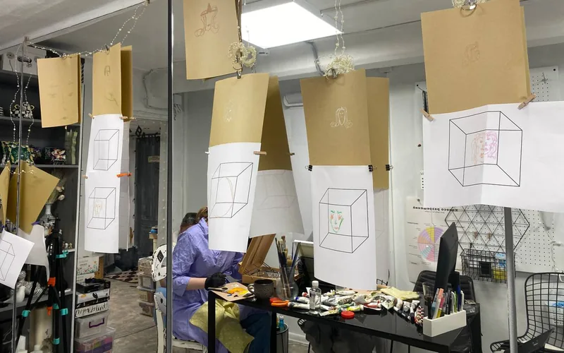
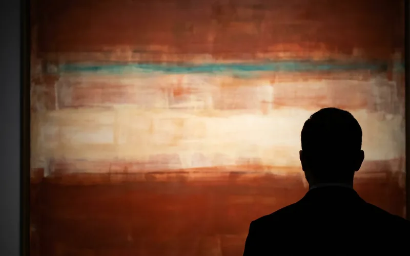
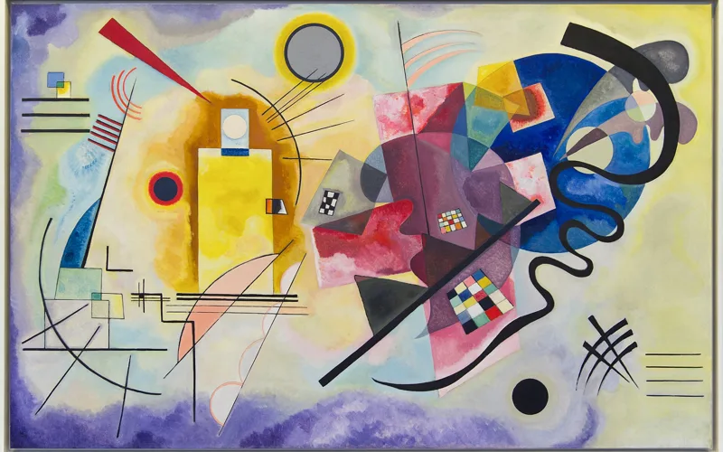
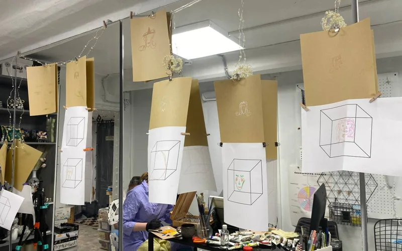
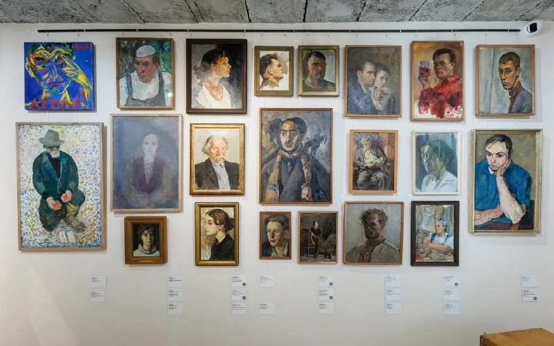
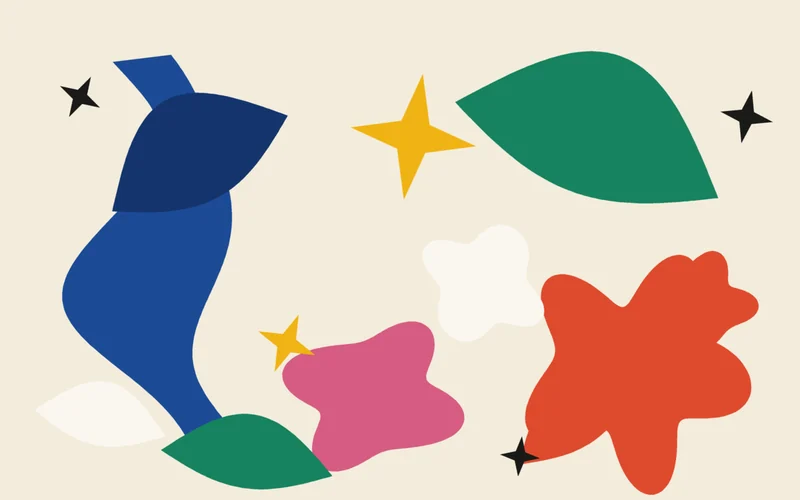
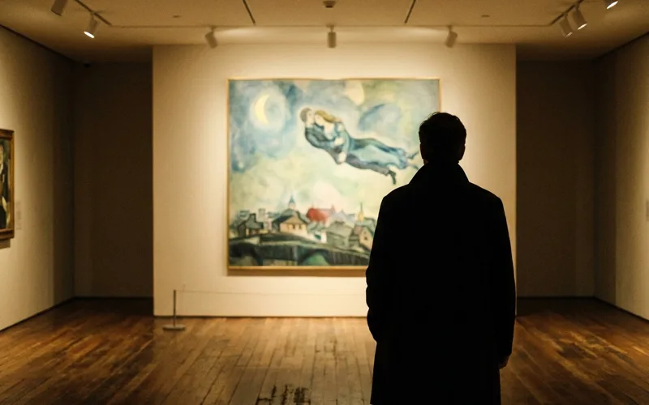
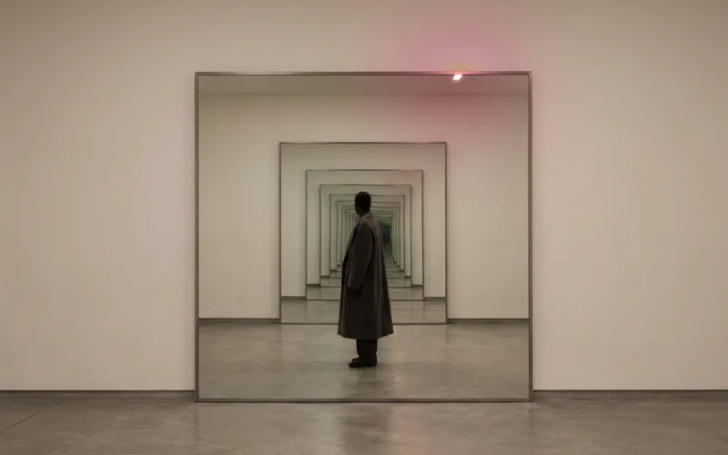
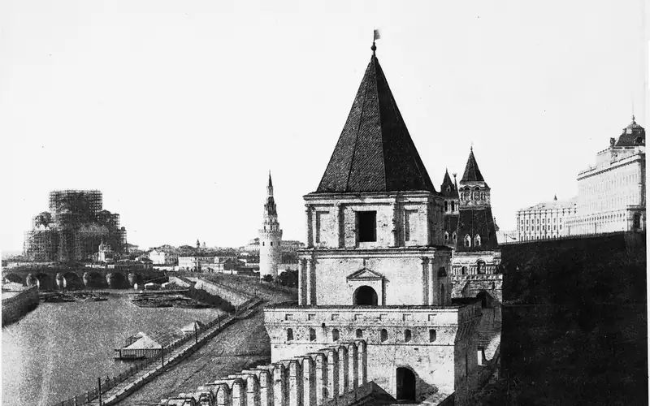
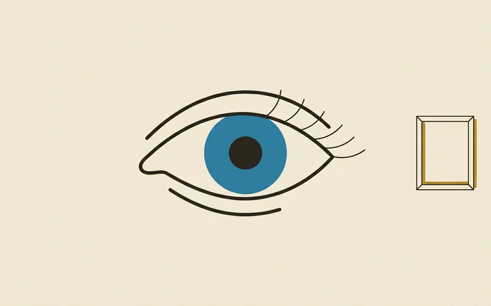

Куб Неккера и портрет: восприятие проявленности
Рисунок не меняется, а форма переворачивается. Почему мы воспринимаем не изображение, а его интерпретацию, чем видеть лицо отличается от узнавать человека — и почему хороший портрет оставляет человека не до конца проявленным.

Как смотреть картины Ротко: сорок пять сантиметров, которые всё меняют
Он оставил инструкцию: вешать низко, приглушённый свет, один-два человека в зале — и встать в сорока пяти сантиметрах от холста. Почему перед его картинами плачут, что такое проектирование состояний и куда пойти в Москве и Петербурге за тем же опытом.

Кандинский слышал цвета: как синестезия изменила искусство XX века
Жёлтый звучал для него как труба, синий — как виолончель. Как синестезия одного человека привела к абстракции, что об этом говорит наука — и почему цвет передаёт состояние точнее слов. Плюс интерактив Google «Play a Kandinsky».

Как проходит сессия «Автопортрет»: два голоса с наших встреч
Художественная практика плюс коучинговый разбор. Честные отзывы участниц Ксюши и Василисы — и ближайшие встречи, на которые можно прийти.

Городок художников на Масловке: как среда выбирает профессию за тебя
Сто лет, двести мастерских, пять поколений художников в одной семье. Коуч Елена Семёнова — о том, как среда решает, кем ты станешь, и что делать, если хочется выбрать путь самому.

Когда ограничение оказывается прорывом
После тяжёлой операции Матисс почти не мог стоять — и придумал вырезки из гуаши, резал цвет ножницами. Как исчезнувшие условия дали то, чего не рождалось двадцать лет, и что из этого следует для нас.

Мы разучились смотреть. Как вернуть это за десять минут
Почему в музее на картину смотрят 27 секунд, при чём тут Гарвард и Метрополитен, как вернуть внимание за десять минут перед одной работой и куда пойти в Москве — Шагал и Кустодиев.

Микеланджело Пистолетто. Третий рай
Автопортрет из QR-кодов, зеркальные картины, где зритель становится соавтором, и манифест «Третий рай» о равновесии природы и технологий — глазами коуча Елены Семёновой.

Секрет блестящей карьеры Константина Тона
Удача была — но она встретилась с очень хорошо подготовленным человеком. Как трудолюбие, «удачные неудачи» и совпадение компетенций с запросом эпохи создают большую карьеру на длинном горизонте.

История Вайолет: что видит настоящий художник
Листаемая книга-история с выставки Дэвида Хокни — о том, как рассмотреть в человеке то, чего не видят даже самые близкие. Настоящий портрет показывает не внешность, а внутренний мир.

Как мы сняли фильм: история Насти Булаевой
Фильм — визитная карточка нашего арт-коучинга. Видеохудожник Настя Булаева, тандем с Максимом (Тео), гадалка Саша Жильцова — и как без большого бюджета получилась маленькая сказка.

Подвиг: план победы на завтра
Четыре музея за один день: Ларионов и Гончарова, «Книги в меду», Тон-центр, Эрик Булатов — и вопрос «кто я», от которого было не спрятаться.

Цвет — язык души
Цвет не объясняет, он дотрагивается до сердца. Как оттенок открывает двери памяти, веселая практика на выходные и что почитать и посмотреть про цвет.

Дверь как метафора: девять предметов и девять вопросов
Почему дверь стала главным образом проекта и что означают девять предметов, которые протягивает рука. С короткой библиотекой: ван Геннеп, Тёрнер, Башляр, Макклауд.